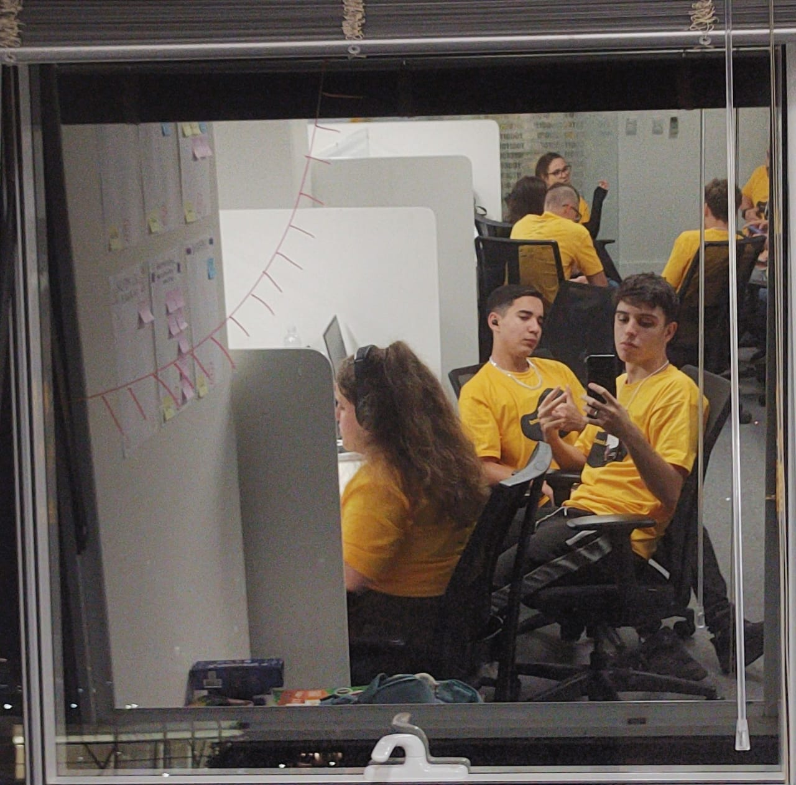

22 de abriu de 2023
JORNADA DO ZERO À PRIMEIRA VAGA

No segundo dia do SW Palhoça, mergulhamos de cabeça no trabalho e
começamos a transformar nosso projeto, a "LOPS", em realidade. Foi um
dia repleto de ação, em que nos dedicamos incansavelmente para fazer
com que nossa ideia saísse do papel e desse seus primeiros passos
concretos. A energia estava contagiante enquanto nos envolvíamos
ativamente na execução do projeto.